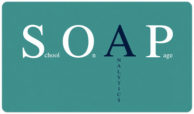
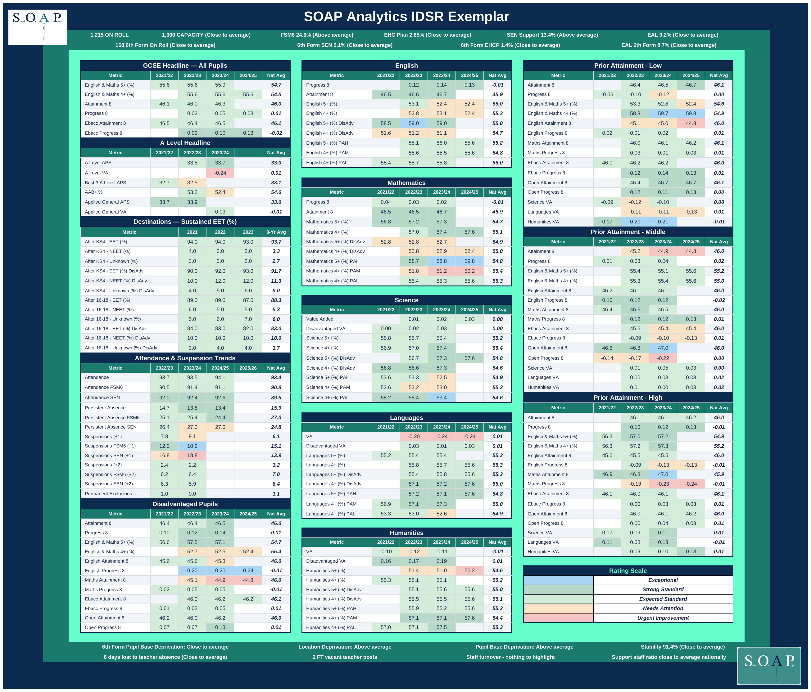

Strategic Intelligence for School Leaders

Clarity. Insight. Impact.
SOAP Analytics brings everything together into a single intelligent view designed for school leaders.
School on a Page — Live View

I'm Robin Dann. I've spent 22 years in teaching, the last 10 of them in senior leadership — most recently as Deputy Headteacher and Strategic Data Lead across a Trust of 18 schools, four secondaries and fourteen primaries.
Working alongside headteachers, I saw how hard it is to see every aspect of a school clearly when you're reliant on so much data, spread across so many different staff, just to pull it together. That's why I built SOAP Analytics — so that picture is ready quickly, and easy to review, whenever a leader needs it.
It brings every facet of a school into one objective view — Context, Safeguarding, Inclusion, Curriculum & Teaching, Achievement, Attendance & Behaviour, Personal Development & Wellbeing, Leadership & Governance — so leaders can stop hunting for information and get straight on with acting on whatever it shows them.
This isn't a dashboard bolted onto someone else's system by people who've never sat in a headteacher's chair. Every section, every rating, every report is shaped by someone who has sat across the table from an inspector, presented to a board of governors, and knows exactly what a leader needs to see — and how fast they need to see it.
Headteachers. Trust leaders. Governors. Data leads who are tired of rebuilding the same report from scratch every cycle. If you need a clear, defensible view of school effectiveness — not just data, but the evaluation and interpretation behind it — this is built for you.
I'd genuinely like to hear what your school or trust is grappling with.
Get in touch →